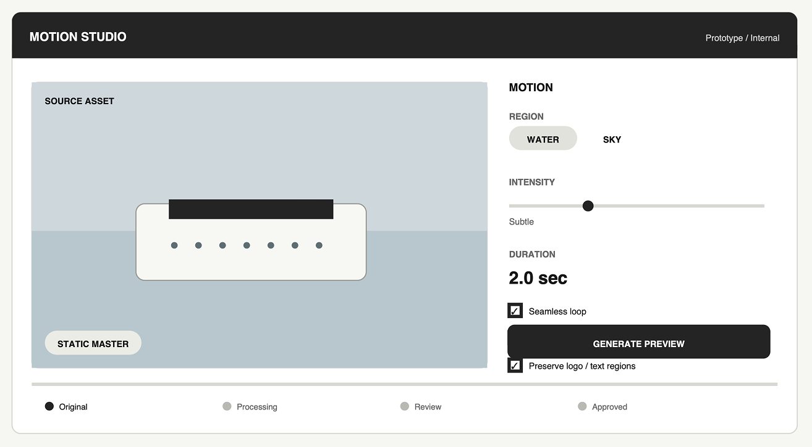
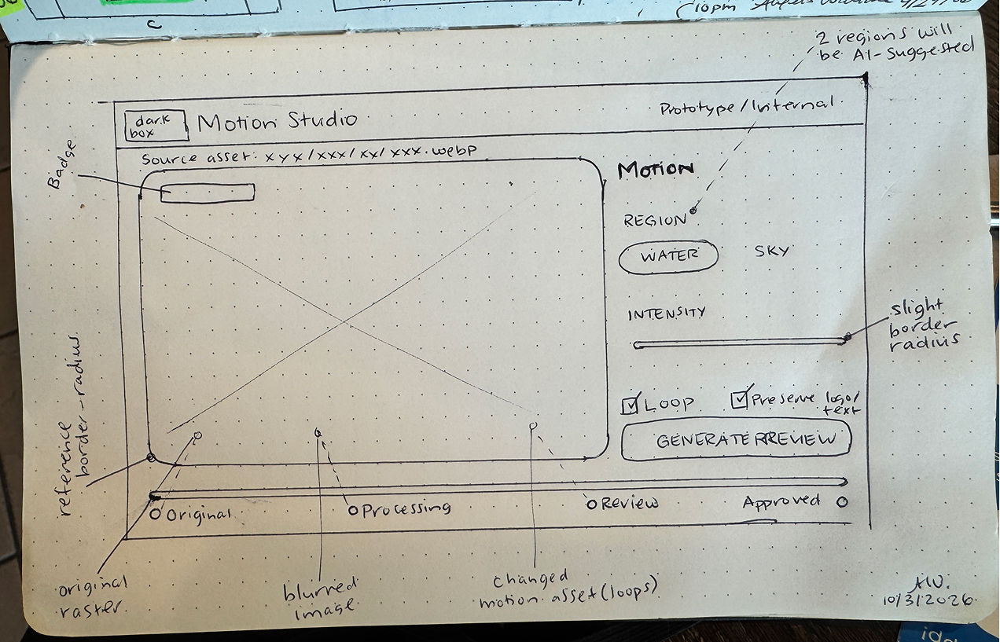
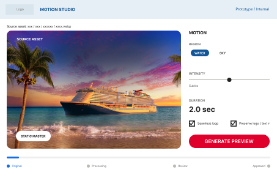
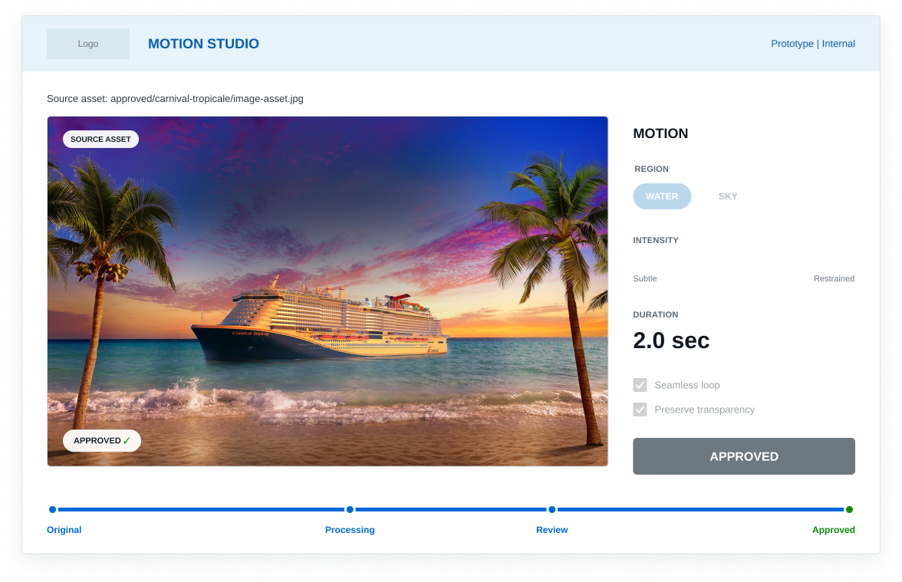

Motion studio
Case study
A human-directed, AI-assisted coded prototype
Opportunity
After a round of interviews, I was asked to show an example of how I use AI in my design work. Rather than create an AI demonstration in isolation, I used the request as an opportunity to identify a plausible product opportunity within the cruise industry and show how I move from an ambiguous idea to a working prototype.
I began with a short competitive analysis of the company and one of its competitors. Because I have previously worked as both a designer and developer in the cruise industry, I knew that one of its most abundant and valuable resources is professional photography. I thought to myself:
“How could I enhance an existing company assset with AI and increase its value while incrementally creating a workflow that was technically feasible with an enterprise team?”
Research
I reviewed public-facing cruise-industry websites for a useful, technically plausible opportunity small enough to prototype. Many pages relied heavily on static photography, including older imagery beginning to show its resolution, while video was concentrated in higher-priority promotional experiences. I chose an existing cruise image with large areas of water and sky to test whether restrained ambient motion could extend approved professional photography without altering the ship, branding, architecture, or original photographic intent.
ResultA user selects an approved image, AI identifies candidate motion regions, a restrained treatment is generated, and the workflow pauses for human review. Human judgment remains the approval boundary.
Visual language extraction
To make the prototype plausible within an existing company environment, I inspected the company’s public-facing interface and CSS for recognizable visual cues, including action and navigation colors, background treatments, and button radius. I selectively applied those characteristics rather than reproducing the interface one-to-one or implying access to an internal design system.


Design to specification
AI exploration


I used a reasoning model to explore the opportunity and translate the initial idea into a low-fidelity interface concept.
Human design


I sketched an updated UI with control placement, progress states, and the review sequence to decide what the prototype needed to communicate.
Figma


I converted initial concept into a structured low-fidelity design with enough hierarchy, interaction, visual language, and state definition to create a prototype.
Functional spec
I created a functional spec for the execution agent, defining state, interactions, constraints, behaviors, human review boundaries, accessibility, and scope.
Agent handoff
The execution agent received the functional specification, visual state references, approved source asset, and repository context.
Rather than prescribe individual implementation steps, I established the sources of truth, constraints, intended behavior, and boundaries of the prototype. The agent was instructed to inspect the existing architecture, state its implementation plan, build the complete interaction, and verify the result.
The handoff intentionally left room for implementation decisions where the specification had already established sufficient intent.
Gaps discovered
Walking through the concept exposed requirements that were not obvious in the initial idea. The original flow focused on generation and approval, but a usable interaction required an empty state and an approved-asset selection flow.
The specification did not simply document a finished idea. It became a tool for discovering missing requirements before implementation.
ResultStructured conversations exposed tradeoffs earlier, preserved relevant context, and reduced ambiguity without treating AI output as authority.
Live prototype: Motion Studio
Motion Studio is a low-fidelity internal product concept for extending the value of approved photography through restrained AI-assisted motion.
- A user selects an approved source image.
- The system identifies candidate regions such as water or sky and allows the user to select one.
- Motion intensity is deliberately constrained from Subtle to Restrained
- Duration is fixed at 2.0 seconds.
- Generate Preview moves the workflow into Processing and then stops at Review.
- The generated result cannot approve itself.
- A human must evaluate the result and explicitly select Approve before the workflow reaches its final state.
Findings / next iteration
Findings
The low-fidelity prototype showed implementation feasibility before investing in a production AI pipeline.
- Responsive behavior and state transitions became testable
- Focus behavior and progress timing could be evaluated
- The relationship between generation and approval became tangible
Gaps
Several interactions were intentionally left out because they were not necessary to prove the concept.
- No rejection or regeneration flow
- No editing, saving, versioning, or asset history
- No production segmentation or generative video processing
- Failure handling, performance, and delivery need validation
Where AI extended the specification
The functional specification established the workflow through human approval, but I did not explicitly prescribe every presentation behavior after Approve. Using the state model, visual references, and surrounding context, the execution agent completed a presentation-ready Approved state, including the simulated subtle-motion treatment. This was not unrestricted invention; it was a missing local detail inferred from a strongly constrained product model.


Productive agent autonomy
When intent is underspecified, autonomous implementation can create unnecessary complexity or drift from the design problem. When context is sufficiently structured, an execution agent can resolve local implementation decisions without requiring every behavior to be individually prescribed.
The goal is not to remove human judgment. It is to preserve human judgment for the decisions where it matters and reduce the friction surrounding those decisions.
Reflection
This process changed how I think about AI-assisted prototyping. Much of the process I went through with a team could now be done with an agent: from brainstorming ideas, to generating mockups, which I would then adjust hierarchy, interaction, and states. Ultimately, the best result still requires higher-fidelity mockups, behavioral, functional, and presentation specification documents. I still provided assets that could not be inferred. I provided all the necessary context around how I ultimately wanted the prototype to behave. Once that ambiguity had been reduced, implementation became dramatically faster. The result was a working, reviewable, documented product direction rather than an isolated generated artifact.
“What continues to amaze me is how much of a collaborative process working with AI has become for me. I can work out ideas faster and build evidence quicker than I could on my own.”